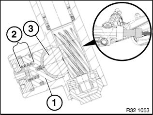

32 11 ... Notes on Checking Steering Backlash on Vehicles With Rack-and-Pinion Steering (With Front Axle Raised)
32 11 ... Notes on checking steering backlash on vehicles with rack-and-pinion steering (with front axle raised)
Note:
When the front axle is raised, the applied force is distributed via the tie rod into horizontal and vertical forces. If there is now no electric or hydraulic assistance, the forces created cause the thrust member (1) to be unloaded against the spring (2). The play created in this way is incorrectly referred to as steering backlash.
3 = Rack
Important!
Target status: steering must be free from play in all the mechanical components (except for steering gear and tie rod)!
Note:
For checking purposes, the steering gear must be pressurized by means of electric or hydraulic assistance.
^ Hydraulic steering assistance: Start engine
^ Electro-hydraulic steering assistance: Switch ignition on
^ Electric steering assistance: Turn on ignition and start engine